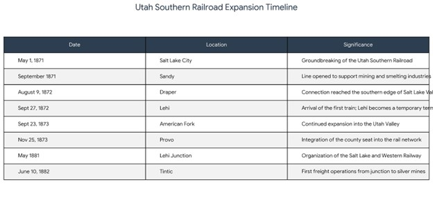
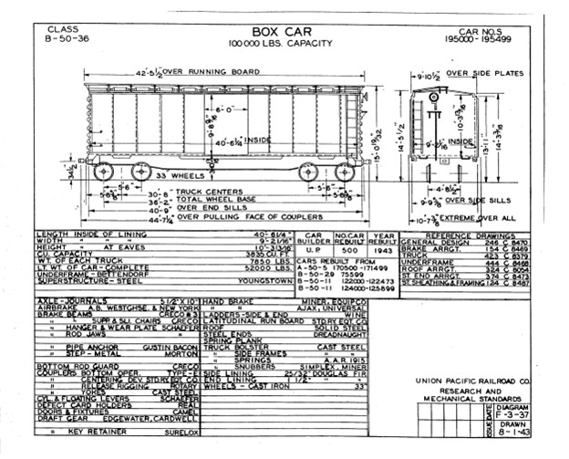
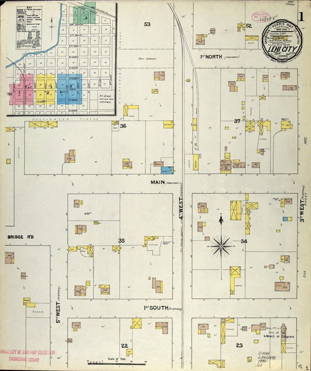

Origins of the Utah Southern Railroad
To understand the significance of Lehi Junction, one must first examine the broader ecclesiastical and economic motivations of the leadership of The Church of Jesus Christ of Latter-day Saints (LDS) in the late nineteenth century. Following the completion of the first transcontinental railroad at Promontory Summit in 1869, there was an immediate recognition among territorial leaders — particularly Brigham Young — that rail connectivity was essential for the survival and expansion of the Mormon "Zion."[2]
However, there was also a desire to maintain local control over these networks to ensure they served the needs of the pioneering settlements rather than purely speculative external interests.[3] Because of these needs, the LDS Church decided to build the Utah Southern Railroad. It was incorporated on January 17, 1871, with the goal of extending the rail network south from Salt Lake City.[4] The project was a communal endeavor, often utilizing local labor and resources, which reinforced the identity of these lines as "Mormon Roads."[5]
While precise figures for this specific rail line remain elusive, typical railroad construction during this era ranged from $45,000 to $60,000 per mile. In modern terms, this equates to approximately $2.5 million per mile. Given that the Utah Southern spanned roughly 103 miles, the church's investment would be valued at a staggering $257 million in today's economic climate.[7]

Arrival of Trains to Lehi
The arrival of the first train in Lehi on September 27, 1872, was an event of immense cultural importance. Hundreds of townspeople gathered to witness the steam locomotive — an object of industrial wonder with its "huge blunderbuss smokestack and shrieking whistle." For many residents, this was their first encounter with the mechanics of the industrial age, marking the transition from an isolated frontier existence to a connected regional identity.[1]
The arrival of the train rapidly changed Lehi's development, transforming it from a small agricultural settlement into a regional transportation hub. Lehi became a temporary terminus — meaning that goods and passengers traveling south were distributed from this location. This shift caused rapid economic growth and led to the creation of a new business district, particularly in the northern part of town.[8]
The railroad established the physical and economic foundation that later allowed the Junction district to emerge. This period fostered a new class of logistical laborers, including teamsters and bullwhackers, who managed the distribution of freight to distant settlements. The influx of travelers and workers necessitated the rapid construction of boarding houses, saloons, and hotels along State Street and Second East.
Furthermore, the railroad enabled an architectural shift, making it economically viable to import kiln-fired clay bricks and blue-grey limestone, which replaced earlier adobe and timber structures.[8]

Chronological Milestones of the Utah Southern
The table below outlines the specific chronological milestones of the Utah Southern and its subsequent branches, highlighting the speed at which connectivity was established across the region.
From Adobe to Brick: How Trains Changed the Physical Landscape
The railroad did more than just move people; it changed the physical appearance of the town. Before 1872, Lehi was a settlement of adobe, timber, and local stone.[9] The railroad made it economically viable to import high-quality, kiln-fired clay bricks and blue-grey limestone from quarries in the Lake Mountains.[10]
This architectural evolution is documented in the National Register of Historic Places listings for Lehi's commercial core. The "Victorian Eclectic" style — characterized by corbeled brickwork and ornate cornices — became the standard for the new business district. Notable structures from this era, such as the Broadbent store (founded in 1882) and the People's Co-op buildings, reflect the transition from frontier vernacular to industrial sophistication.[11]